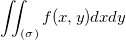
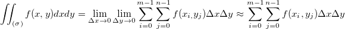

/math-83bebb5bd6dcc10b6dc2688637e5487f.png "z=f(x,y),(x,y)\in \sigma") に対しては、曲面以下の体積は次式で計算されます。
に対しては、曲面以下の体積は次式で計算されます。
内容 |
この機能は、Z=0平面と行列曲面の間の体積を2次元の積分により計算します。2次元の体積積分は、行列ウィンドウまたは、行列データのグラフ上で実行できます。
この機能を使用するには、
| 入力行列 |
操作する行列 |
|---|---|
| 欠損値を補間する |
このパラメータがtrueの場合欠損値を除去します。 |
この関数は数値積分を使って、行列の曲面以下の体積を計算します。
連続した曲面に対しては、曲面以下の体積は次式で計算されます。

数値法を使って、次のように記述することができます。

ここで、M, N は、それぞれ行列の行数、列数を表しています。実際の計算処理では、
/math-d0b2a10870e11b6cd440c0bbbab3e1bd.png "\left( f\left( x_i,y_j\right) +f(x_i,y_{j+1})+f(x_{i+1},y_j)+f(x_{i+1},y_{j+1})\right)/ 4")
が/math-08e9a2d80924cd547c29f639cd27acc7.png "f(x_i,y_j)\!") の代わりに使われます。
の代わりに使われます。